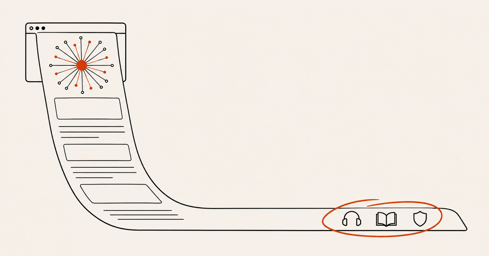

DiliTrust describes itself as "the only AI-native, fully integrated platform" for legal teams. Buyers seem to decide on more practical questions, such as whether their team will actually use it, and DiliTrust has good answers to those, mostly further down its website.

In early November, around twenty heads of legal met for dinner in Vienna to compare notes on rolling out legal tech and AI. A member of DiliTrust's team was there, and wrote on LinkedIn afterwards that which AI you use was almost a side issue that evening. Most of the conversation was about getting tools adopted.
DiliTrust's own headline puts the emphasis on technology. This is the sixth teardown in a series where I compare what B2B software companies say about themselves with what their customers report. This one looks at the gap between DiliTrust's headline and that dinner conversation.
DiliTrust sells software for the core work of an in-house legal department and its board: contracts, subsidiaries and their directors, legal cases and requests, board meetings, and secure document sharing. These come as five modules (Contract Lifecycle Management, Entity Management, Matter Management, Board Portal and Dataroom), with e-signature and an AI assistant called Lini built in.
The company is based at Paris La Defense. Cathay Capital, Eurazeo and Sagard invested more than EUR 130 million in 2022 alongside management, and buying other companies was part of the plan. There have been four acquisitions since 2021: Gobertia in Spain, Hyperlex in France, doeLEGAL in the US and PACTA in Germany. Revenue was about EUR 20 million in 2021, the last public figure, and LinkedIn lists 344 employees.
Prices are quoted case by case. In France, the closest alternatives are Wolters Kluwer's Legisway and Septeo's Legal Suite, and Diligent for board meetings.
DiliTrust uses the same line, "the only AI-native, fully integrated platform", almost everywhere: on LinkedIn, the homepage, the login screen, and its Capterra and Gartner listings. It's signed "Where Legal Leads".
I went through the homepage without filling in any forms. It has nine sections, counting the strip of customer logos. The first mention of helping teams adopt the software, and of the support behind it, comes in section four. Lini and the review ratings come in section six. The product pages follow the same pattern: AI features first, support and training near the end.
The dilitrust.com homepage, top to bottom, November 2026. Red: first mention of adoption and support. Outlined: Lini and the review ratings.
Two LinkedIn posts by DiliTrust staff show what buyers bring up. After the Vienna dinner, the takeaway was that choosing a tool may be the easier part. The harder part comes after: tools that barely get used, colleagues in the business who need convincing, and keeping management's support for years.
In October, at a General Counsel conference in Dubai, another member of the team kept hearing one question: when the technology gets something wrong, who is responsible? The post concludes that trust is built after the demo, and depends on whether a person is there to help.
DiliTrust has good answers to both. Its Customer Success page promises a 25-minute reply and a dedicated project manager from the first day. Its AI Code of Conduct keeps a person in charge of important decisions. A DiliTrust blog article on AI and boards even lists "who is accountable for the outcome?" as a question directors should ask.
So why lead with technology? It probably depends on when a buyer meets the message. A company choosing legal software usually goes through three steps:
DiliTrust's website is strongest at step one. Its answers for steps two and three exist, but they come late. In my Pluxee activation teardown, problems also started after the sale, when customers first tried to use the product.
Some of DiliTrust's best answers to "who is responsible?" are in the product itself. When the contract tool flags a risky clause, it suggests the change as a tracked edit in Word, so the lawyer decides whether to accept it. In the board module, minutes drafted by AI have to be approved by a person before they become official. And when Lini searches regulations, it cites its sources. These are easier to show than to explain, for example with screenshots next to the AI claims.
Reviewers point to one place where this could go further. Some say the AI summary sheets, which pull key information out of contracts, are sometimes incomplete or wrong. If the sheets don't already show where each piece of information came from, doing so would make them easier to check.
I also asked these questions to an in-house counsel at a French industrial group. She doesn't use DiliTrust. I've been advising her on automating her claims follow-up, and she answered about the kind of tool she would want for that work.
On responsibility, she drew a clear line. The legal team stays responsible for what the tool produces: a tool should "accompany the user, not replace them", and its data comes from legal registers and the company's own accounts. The software provider shares responsibility only if the tool misses a deadline, because in legal work "the question of deadlines is very, very important" (my translation).
On her colleagues: email is "completely obsolete" for this. Credit managers would use a shared tool if they could see the invoices from the accounting system and tick the ones that become a legal case, instead of collecting and sending them.
Her answers aren't about DiliTrust, but they apply to it. DiliTrust already shows people in control of what the AI produces. Never missing a deadline, and connecting to the systems colleagues already use, are two more answers it could bring forward.
A homepage message that answers the practical questions first, for example:
"Legal software your team and the business keep using. The AI drafts, your people decide."
| What buyers ask | What DiliTrust could say | What would prove it |
|---|---|---|
| Will my team use it? | Up and running quickly, used beyond the legal team | Average time to get started; share of users still active after six months; connections to the accounting and other systems colleagues already use; a named customer saying so |
| Who answers when the AI is wrong? | A person stays in control of what the AI produces, and deadlines don't slip | Screenshots of the tracked edits and of the minutes approval step; how reminders and notice dates are triggered |
| What do we get back? | Less time on routine work | DiliTrust's own figure that AI fills in 80% of contract fields, with how it was measured; time saved, measured by a customer |
Lini stays in the story as what makes all three possible. To see whether the new message works, I'd compare how many demo requests turn into real sales opportunities with the new message and with the current one. I'd also add one question to interviews with customers who chose DiliTrust or a competitor: "What did you need to show your management or colleagues before signing?"
One smaller thing points the same way.
The numbers change from page to page. Depending on the page, DiliTrust has 2,000+, 2,400+, 2,500+ or 3,000+ customers. Meanwhile, one of the best customer stories of the autumn only appears in an employee's LinkedIn post: the head of legal at a Board Portal client was named legal director of the year for Spain and Latin America. Most case studies on the site don't name the customer. One shared, up-to-date list of figures and customer stories would help with both.
On Capterra, DiliTrust has 69 reviews averaging 4.6 out of 5, with 4.5 for customer service. GetApp shows the same reviews. G2 has 32, averaging 4.3, and OMR, a German review site, has 60.
The praise is similar across sites and languages: security and data protection, ease of use, and support. All nine OMR reviews that mention support are positive. One GetApp reviewer says users can find what they need "without extensive training".
Most of the criticism is about getting started. A Capterra reviewer who gave five stars still mentioned the "initial setup and learning curve". Others say the interface is hard for board members who aren't comfortable with technology, and that new users take a while to get going. Moving old data across and setting up access rights made some rollouts complicated. German reviewers mention having to change how they work, and one says the software doesn't yet connect to their other company systems.
AI comes up less often, and mostly as a limitation. Besides the summary sheets, an OMR reviewer writes that the AI features have "not yet achieved the decisive breakthrough" (my translation).
Overall, reviewers value the people and the security, and their difficulties are mostly in the rollout. I saw something similar in my LumApps enterprise selling teardown, where 99% of customers renewed, yet satisfaction was lower than for a simpler competitor. Here, the reviews and the staff posts say the same thing.